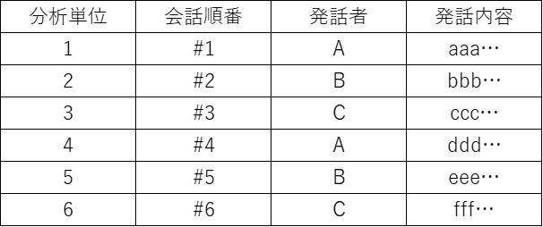
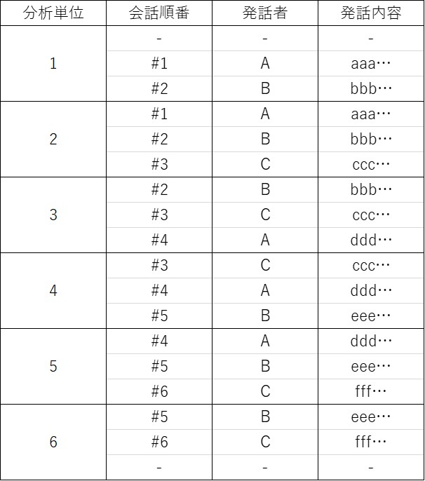
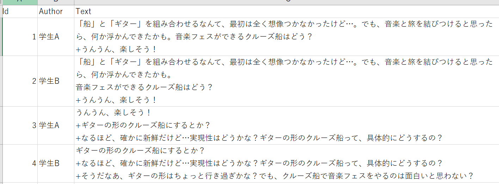

10.1. Moving Stanza Window Methodとは
Moving Stanza Window Methodは対話内の時間的なつながりをモデル化する手法です．特徴量が大きく反映されるという性質から，9. 累計モデルでは見られなかった個人貢献を見ることができます．この方法では，対話中の任意の発話区間を「Window」（分析単位）として扱い，それらを順番にずらしていきます．ここで言う「Stanza」とは，同じ文脈に属する一連の発話や出来事，イメージ，視点，テーマを指します．Moving Stanza Window Methodを用いることで，特定の発話順番での発話者が，その1ターン後の順番で出現したアイデアを引き出していることや，逆に，ある発話順番でのアイデアが1ターン前の順序に基づいて生まれていることを検出できます．これにより，より時間的な文脈を考慮した分析が可能となります．
10.2. データの準備
Moving Stanza Window Method を⽤いた分析を行うために，対話データを改変する必要があります．今回の分析で用いるサンプルデータセットの詳細に関しては，5. 分析データの準備をご覧ください． 分析単位の設定は，全ての発話ターンは，1つ前のターンに影響を受け，その次のターンに影響を与えるという仮定のもとに，今回は発話順番の上から順に3ターンずつを1つの分析単位，Stanzaとして設定します．以下に例として６行で構成される，通常の対話データ構造（図10-1）と，Moving Stanza Window Method を⽤いた対話データ構造（図10-2）をそれぞれ示します．前述の「全ての発話ターンは，1つ前のターンに影響を受け，その次のターンに影響を与える」という点から，Moving Stanza Window Method を⽤いた対話データ構造では注意が必要です．分析単位1では1つ前のターンが，分析単位6ではその次のターンが存在しません．そのため分析単位2~5とは異なり，分析単位1及び6は2行で構成されることになります．
{kind=link}
図10-1 通常の対話データ構造
{kind=link}
図10-2 Moving Stanza Window Method を⽤いた対話データ構造
以上の規則に従って改変したデータが以下の通りです（図10-3）．Stanzaを設定したことによって繰り返しがなされていることがわかります．この改変がなされたデータセットは「data_Stanza.csv」として「.../ルート名」 にありますので，ご自身のPC上で「data.csv」へとファイル名の変更をした上でご利用ください．
{kind=link}
図10-3 Stanzaを設定したDataFormatの一例